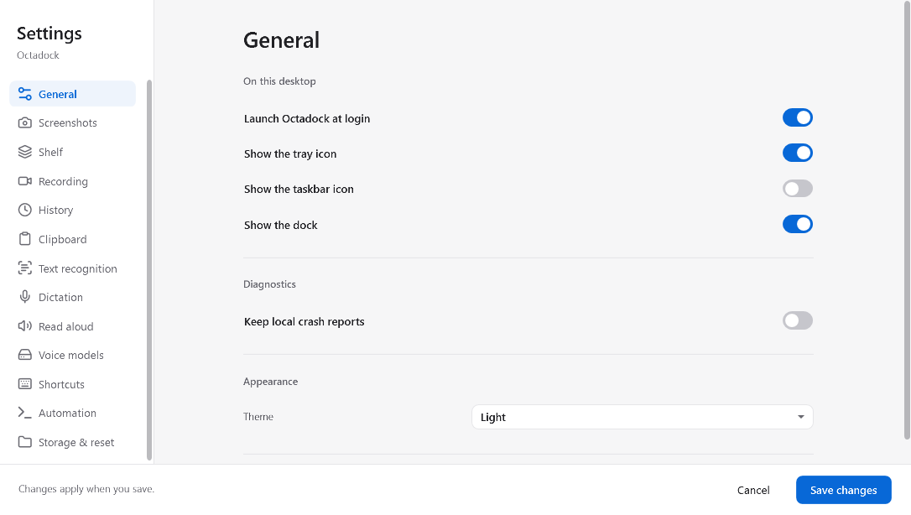
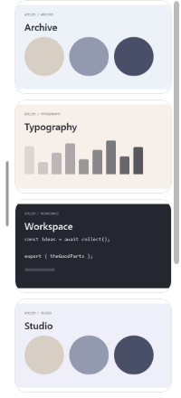
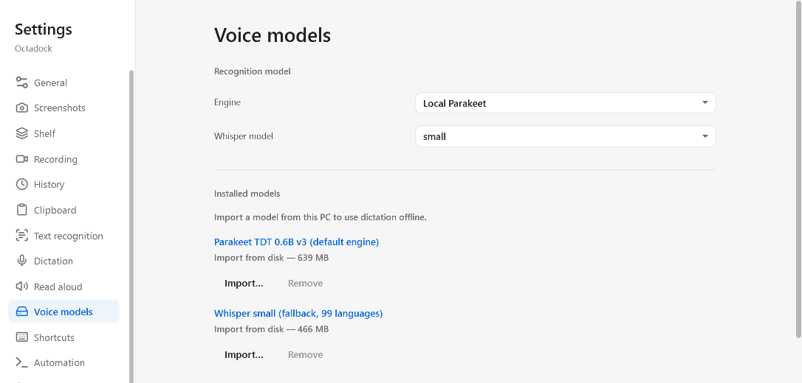
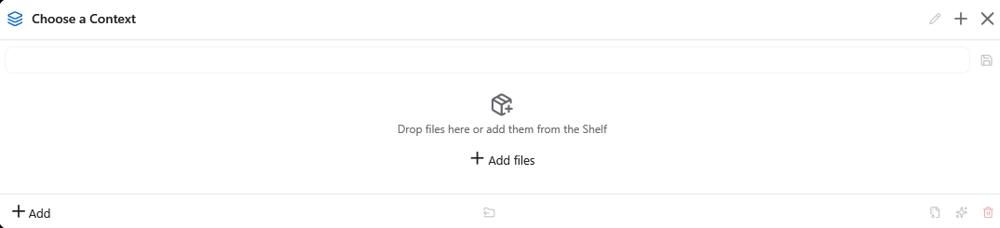

Grab anything on your screen.
It stays yours.
The Windows-native toolkit for screenshots, recordings, text and dictation.Everything runs on your PC. No account, no cloud, nothing to subscribe to.
MIT licensed, every feature included


Try it: drag anywhere on this desktop
Always one keystroke away
Press Ctrl+Shift+4 or hover the Dock, and the selection frame is already under your cursor. Every capture lands on the Shelf and your clipboard at the same time, ready to drop into any app. No folders to dig through, no flow to break.
- Area, window, full screen, timer
- Scrolling pages, stitched into one image
- Straight to the Shelf and the clipboard

A few things worth keeping. Ideas, observations, and the spaces between.
Text, voice and video, without the cloud
Pull the text out of any pixels, dictate into any app, hear a selection read back, record what happens. Every one of these runs on this PC.
Copy text from any capture
On-device recognition with the Windows engine. Select a region, get the words.
Dictate anywhere
Live partials at the cursor, from a model you import.
Read it aloud
Any selection, file or clipboard, in an installed Windows voice.
Record your screen Beta
MP4 video with optional microphone and system audio, both off until you turn them on.
Scrolling capture Beta
Long pages, chats and documents, stitched into one clean image.
Clipboard history
Optional, searchable, and stored only on this PC.
Make your point, fast
Open a capture from the Shelf and draw on it. Copy flattens the marks into the image; the original stays untouched in the Library.
- Pen, arrows, boxes, counters, text
- Blur to redact before you share
- Highlight and crop

Never redo a screenshot
Every capture, recording and OCR result stays in the Library on this PC. Find it, restore it, bundle it into a Context with notes and files, and export the folder wherever you work.
- Search and filter by type
- Capture info, one click away
- Context bundles, exported as a folder
There is no cloud to leak into
Octadock ships with no servers, no accounts and no telemetry. Captures are written to this PC and nowhere else. It works exactly the same on a plane.
- No account, no telemetry, no update checks
- OCR and dictation run on-device
- Everything under %LOCALAPPDATA%\Octadock

Built for everyday Windows workflows
A WPF tray app for Windows 10 and 11 x64: DPI-aware, using the system OCR engine and the voices already installed on your PC.
Keyboard-first
Ctrl+Shift plus one number does the everyday work. Assign the rest in Settings, which flags conflicts as you type.
Script it
A CLI, octadock:// URLs and global hotkeys, with JSON output for your scripts. Nothing listens on the network.
PS C:\> octadock ocr --mode lines --json
PS C:\> octadock record --select-area
PS C:\> start octadock://self-timer?seconds=3
PS C:\>
Context bundles
Drop captures, notes and files into a Context, then export it as a folder or a zip for whoever needs it next.

Every monitor
Mixed DPI, negative origins, and a Dock that remembers its place on each display.
Upgrade your Windows screen capture today.
Free and open source, with every feature included. This is an unsigned 0.3.0-alpha.2 build. SmartScreen warns once: choose More info, then Run anyway. A signed Microsoft Store build is next.
Get Octadock for Windows Windows 10 and 11 · x64 · MIT license · No account · Source on GitHub